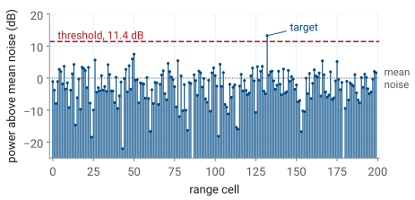
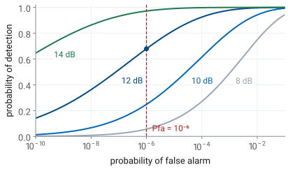
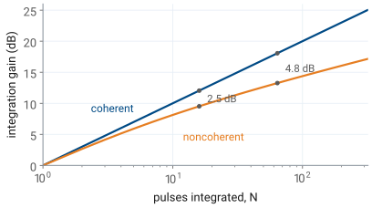
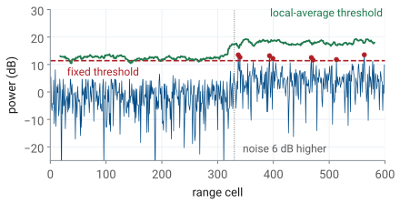
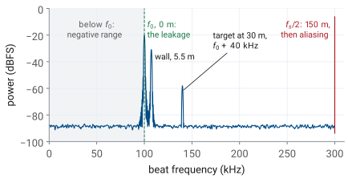
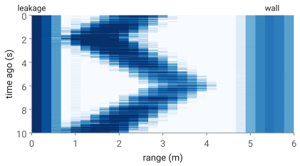

Radar Overview 1 - Detection and FMCW Range#
Detection and FMCW Range
A threshold against noise decides what the radar reports, and an FMCW chirp converts range into frequency.
Radar Overview 1 · Antennas, Phased Arrays, and Radar Systems · Dr. Neil Rogers
Printing
To print the slides, switch to present mode and print: one slide a sheet, with room for notes. Print from read mode for the whole lesson.
Learning Objectives
- I can apply radar detection theory (PD, FAR, dwell time) to determine detection performance under noise.
- I can describe FMCW radar operation and configure an FMCW waveform on the ADALM-PHASER.
- I can process FMCW radar data to produce range, range-waterfall, and range-Doppler results.
This overview and the next cover what the L28–L31 Labs use, in two class periods. Each topic here is a summary of a full lesson, and each frame links to that lesson for the derivation. Read the lesson half of each lab’s page before its lab; these two overviews do not replace it.
Two Overviews, Four Labs
Overview 1: detection against noise, then range from an FMCW chirp.
Overview 2: velocity, MTI, CFAR, classification, and tracking.
L28–L31 Labs: range, range-Doppler and MTI, CFAR, classify and track. Each lab starts from the one before it.
Today’s first half is detection: every cell of a radar’s output holds noise, the processor compares each cell with a threshold, and the signal-to-noise ratio (SNR) sets how often that decision is right. The second half is how the PHASER measures range: it transmits a chirp, and the echo’s delay appears as a frequency that one FFT converts to range. In the L28 Lab you measure range with your kit, and in the L30 Lab you set a threshold on your own data.
RADAR Range Equation Review
In dB: powers in dBm, gains in dBi, \(\sigma\) in dBsm, \(R\) in m, \(f\) in Hz.
RCS and range set the echo power, and so the SNR.
Bandwidth sets \(\Delta R = c/2B\); the PRF sets the unambiguous velocity.
The radar equation of Lesson 25 gives the echo power from a target of radar cross section (RCS) \(\sigma\) at range \(R\), and dividing by the noise power \(kT_\text{sys}B\) gives the SNR. Today’s first half starts from that SNR. The first line is that equation with the wavelength written as \(\lambda = c/f\), because we set a radar by its frequency.
The second line is the same equation in decibels, where the products become sums. Every term that is not a power, a gain, or the RCS goes into one path loss \(L_p\):
The constant 136.6 dB collects \(c\) and \(4\pi\) for the two-way path. It is not the 147.6 dB of the one-way Friis equation, which is \(20\log_{10}(4\pi/c)\). At \(R = 10\) m and \(f = 10\) GHz the path loss is \(40 + 200 - 136.6 = 103.4\) dB, and it rises 12 dB each time the range doubles.
Lesson 26 gave the range resolution \(c/2B\) and the limits the pulse repetition frequency (PRF) sets. An FMCW radar obeys the same relations: its chirp bandwidth sets the resolution, and the rate at which it repeats the chirp is its PRF, which sets the unambiguous velocity in Overview 2. Its farthest range comes from the receiver’s sample rate, not from the PRF, as The 0 m Frequency frame shows.
A Detection Is a Decision
Every range cell holds noise, and some also hold a target.
The processor reports a target in every cell above a threshold.
Noise above the threshold is a false alarm.

The figure is the power in each of 200 range cells, in dB above the mean noise power. Receiver noise is random, and from cell to cell it spreads over more than 25 dB. One cell also holds a target 13 dB above the mean noise. The processor does not know which cell that is, so it applies one rule to every cell: report a target where the power exceeds the threshold. A noise-only cell that crosses the threshold is a false alarm, and a target cell that falls below it is a missed detection. Raising the threshold makes false alarms rarer and misses more common. Lesson 27 has the full treatment.
Probability of False Alarm
\(P_{fa}\), the probability of false alarm, is the chance that noise alone crosses the threshold \(T\).
\(P_{fa} = 10^{-6}\) puts \(T\) 11.4 dB above the mean noise power \(P_n\); 3 dB more noise raises it to \(10^{-3}\).
The probability of false alarm \(P_{fa}\) is the probability that a cell holding only noise crosses the threshold \(T\). Noise power in one cell follows an exponential distribution with mean \(P_n\), and the area of that distribution above \(T\) is \(e^{-T/P_n}\). We choose \(P_{fa}\) and solve for the threshold: \(10^{-6}\) needs \(T = 13.8\ P_n\), which is 11.4 dB above the mean noise.
The threshold is a multiple of \(P_n\), so the processor has to know the noise power. If the noise doubles while the threshold stays where it was, the exponent halves and \(P_{fa}\) becomes \((10^{-6})^{1/2} = 10^{-3}\), a thousand times the false alarms for 3 dB of noise. Overview 2 uses that sensitivity as the reason for CFAR.
What an operator sees is the false-alarm rate (FAR), the false reports per second: \(P_{fa}\) times the number of cells the radar tests each second. A radar that tests a million cells a second at \(P_{fa} = 10^{-6}\) reports about one false target a second. The derivation is in Lesson 27.
Threshold Explorer
A cell that holds a steady target of power \(P_s\) plus noise has a power distribution centered near \(P_s + P_n\). The probability of detection \(P_d\) is the area of that distribution above the threshold \(T\). The area has no closed form; Lesson 27 gives the function that computes it.
The widget draws the noise distribution and the target’s distribution against power in dB, with the threshold between them, and beside them \(P_d\) against \(P_{fa}\) with the present operating point marked. It opens at 13 dB SNR with the threshold 11.4 dB above the mean noise, the setting for \(P_{fa} = 10^{-6}\): 87% of the target’s distribution lies above the threshold, so \(P_d = 0.87\). Move the threshold, and one shaded area grows as the other shrinks. Raise the target SNR, and the target’s distribution moves away from the noise. The pulses control sets the number of pulses \(N\) the processor integrates, which the Integrating Pulses frame covers, and the noise control raises the noise while the threshold stays where we set it.
Pd Against Pfa

A lower threshold raises \(P_d\), the probability of detection, and \(P_{fa}\) together.
At \(P_{fa} = 10^{-6}\): 12 dB gives \(P_d = 0.68\), 14 dB gives 0.97.
By Albersheim’s fit, \(P_d = 0.9\) at \(P_{fa} = 10^{-6}\) needs 13.1 dB.
Each curve fixes the SNR and sweeps the threshold. Lowering the threshold moves the operating point up and to the right along its curve, so detections and false alarms rise together. Only more SNR raises \(P_d\) at a fixed \(P_{fa}\), and it does so steeply: at \(P_{fa} = 10^{-6}\), 8 dB of SNR gives \(P_d = 0.06\) and 14 dB gives 0.97.
The design question runs the other way: what SNR does a required \(P_d\) and \(P_{fa}\) take? For a steady target, \(P_d = 0.9\) at \(P_{fa} = 10^{-6}\) takes 13.1 dB by Albersheim’s equation, a fit that is within 0.1 dB of the exact 13.2 dB, in Lesson 27. The radar equation then says at what range a given target still returns that much.
Integrating Pulses
Echoes add in voltage, and noise adds in power.
With 128 chirps, each chirp needs only \(13.1 - 21.1 = -8.0\) dB.
The dwell time is \(T_\text{d} = N\ T_\text{PRI}\).

A radar does not have to decide on one chirp. If it adds the returns of \(N\) chirps from the same cell before it compares with the threshold, the target’s echoes add in phase, so the signal voltage grows as \(N\) and its power as \(N^2\). A moving target’s phase steps from chirp to chirp, and the second FFT of Overview 2, across the chirps, removes that step before it adds them. The noise is independent from chirp to chirp, so its power grows as \(N\). The SNR therefore grows as \(N\), which is coherent integration, the straight line in the figure. The lower curve is noncoherent integration, which adds powers without the phase and gains less.
Lesson 29’s teaching burst has 128 chirps, each 400 MHz in 200 µs, a gain of 21.1 dB, so a target at −8.0 dB SNR on one chirp reaches the 13.1 dB of the previous frame. The burst sends one chirp every pulse repetition interval \(T_\text{PRI} = 0.4\) ms, so the dwell time is \(128 \times 0.4\ \text{ms} = 51.2\) ms. The target has to stay in one range cell for that long, or its echoes do not add in one cell. Lesson 27 covers the limits on the dwell.
The Fixed Threshold

Where the noise rises 6 dB, noise crosses the fixed threshold eight times.
A threshold the processor computes from the neighboring cells rises with the noise. That is CFAR (constant false-alarm rate) detection, in Overview 2.
Every number so far assumed the processor knows \(P_n\). In a real scene the noise level changes from one part of the profile to another. In the figure the noise rises 6 dB beyond cell 330. The fixed threshold, set for \(P_{fa} = 10^{-6}\) in the quiet cells, has \(P_{fa} = 0.03\) in the noisy ones, and noise crosses it eight times. The green line is a threshold computed from the cells around each cell under test, so it rises where the noise rises. That is constant false-alarm rate (CFAR) detection. Lesson 27 works the numbers, and the L30 Lab runs CFAR on your own data.
FMCW: Chirp and Echo

FMCW (frequency-modulated continuous wave) radar chirps: its frequency keeps rising.
When the echo returns, the transmitter is at a higher frequency. Mixing gives that gap, the beat.
A fixed range gives a fixed gap: one beat frequency.
The second half of today is how the PHASER measures range. A target 3 m away returns its echo after 20 ns, which is too short for the PHASER’s receiver to time directly. A frequency-modulated continuous-wave (FMCW) radar transmits continuously while its frequency climbs linearly across a bandwidth \(B\) during each chirp of length \(T_s\). The echo is a copy of that chirp, delayed by the round trip. The echo returns after the round-trip time \(\tau = 2R/c\).
When the echo returns, the receiver mixes it with the signal the transmitter is sending at that moment. The transmitter has moved to a new frequency in the meantime, because it is chirping: its frequency rises at the slope \(S = B/T_s\), so after a delay \(\tau\) it is \(S\tau\) higher than the echo that is arriving. The mixer output is a tone at that difference, the beat frequency \(f_b = S\tau\). For a target at one range the delay is fixed, so the difference is fixed for the whole chirp, and the beat is one steady frequency for that range. Substituting the slope and the delay gives \(f_b = 2BR/(cT_s)\), which is proportional to range.
The range examples use a chirp that no preset in the Phaser app uses, 400 MHz in 2 ms from 10.0 GHz, as Lesson 28 does. The methods carry over to the presets, and the lab packets ask for the presets’ numbers.
The Beat Frequency
The beat is proportional to range: 1.33 kHz for every meter.
The worked chirp sweeps 400 MHz in 2 ms, a slope of 200 GHz/s. A target at 1 m delays the echo by 6.67 ns, and in that time the chirp climbs \(200\ \text{GHz/s} \times 6.67\ \text{ns} = 1.33\) kHz. The radar reads range by measuring that frequency: a target at 1 m gives 1.33 kHz and a target at 3 m gives 4.00 kHz. The chirp spans 400 MHz, but the beats are a few kilohertz, which the PHASER samples directly.
Both waveform settings change the beat per meter. A wider bandwidth or a shorter chirp steepens the slope and raises it. Lesson 28 works both cases.
Mixing Echo and Chirp
The FMCW frame said the receiver mixes the returning echo with the signal the transmitter is sending at that moment, which has moved to a higher frequency. This widget shows that mixing. Its four traces share one time axis, one chirp long, and follow the signal in order. The first is the chirp going out, a sinusoid whose cycles crowd together as its frequency rises. The second is the echo from a target at range \(R\): the same waveform, late by the round trip \(2R/c\). The third is the output of the receiver’s mixer, which multiplies the echo by the chirp that is still going out. A product of two sinusoids is the sum of two others,
one at the difference of their frequencies and one at the sum. The mixer output is therefore a fast oscillation on top of a slow one, and the dashed line is the slow one, the first term. The receiver’s low-pass filter removes the fast term, and the fourth trace is what remains: a steady tone at the difference of the two frequencies, the beat \(f_b\).
The small panel draws the same chirp and echo as frequency against time. The two ramps are parallel, so from the echo’s arrival to the end of the chirp the gap between them is the same, and the beat is one steady tone. That gap is the chirp’s slope times the delay, \(f_b = S\tau\). Move the target out, and the echo arrives later, the gap widens, and the beat frequency rises.
The widget cannot draw the worked chirp to scale. It slows the chirp to 23 cycles, where the real one has about \(2 \times 10^7\), and it stretches the delay, which is tens of nanoseconds against a 2 ms chirp, to as much as 30% of the chirp, so that both are visible. The drawn beat therefore has fewer cycles than the real one. The readouts are the real delay and beat for the worked chirp, which gives \(2RB/c = 2.67\) beat cycles a chirp for every meter. The FMCW Explorer in the next frame draws the fourth trace, the beat, for the worked chirp at its true scale, and takes its spectrum.
FMCW Explorer
The left panel is the beat signal over one chirp, and the right panel is its range spectrum: the FFT of those samples, with the frequency axis converted to range. The widget opens on the worked chirp. Like the Phaser app, it keeps the last 90% of each chirp, the part the chirp figure marks as kept, so its resolution readout is \(c/(2 \times 0.9B) = 0.42\) m, a little more than the 0.375 m the next frame derives for the whole chirp. Move the target and count the cycles of the beat. Change the bandwidth or the chirp length, and the beat per meter follows \(B/T_s\). Turn on the second target and bring it toward the first until the two peaks merge, which is the subject of the next frame.
Range Resolution
The chirp length cancels: only the bandwidth sets the resolution.
The radar observes each beat for one chirp, \(T_s\), and an FFT over a record of that length separates two tones only if they differ by at least \(1/T_s\). Dividing that frequency step by the beat per meter converts it to range, and the result is the \(c/2B\) of Lesson 26. A longer chirp lowers the beat per meter, and it lets the FFT resolve finer frequency steps in the same proportion, so \(T_s\) cancels. Two targets closer than one cell return one peak. Lesson 28 has the details.
The 0 m Frequency

The PHASER puts a 0 m echo at \(f_0\), 100 to 120 kHz; every beat adds to it.
\(f_0\) changes at every power-up, so calibrate it first.
Beats above half the sample rate alias: 150 m on the worked chirp.
The PHASER does not put a 0 m echo at zero frequency. It adds every beat to a fixed offset, the kit’s 0 m frequency \(f_0\), so a target’s peak is at \(f_0 + f_b\). The offset keeps the targets clear of zero frequency, where the receiver’s own offset and low-frequency noise are. On our kits \(f_0\) reads 100 to 120 kHz, it differs from kit to kit, and it changes when the kit restarts. The first step of the L28 Lab is to measure it, with a metal plate held against the array.
The figure is the whole spectrum the receiver records for the worked chirp with \(f_0\) at 100 kHz. Its power axis is in dBFS, decibels relative to the largest signal the receiver’s converter records. Frequencies below \(f_0\) are negative ranges. The strongest peak, at \(f_0\), is the leakage: the transmit antenna’s direct path into the array, a few centimeters long. The receiver samples at 0.6 MSPS and represents frequencies up to half that, 300 kHz, so the beats have \(300 - 100 = 200\) kHz of room above \(f_0\). At 1.33 kHz per meter that is 150 m, and a beat from farther away aliases to a wrong range. Lesson 28 covers the calibration and the range limit.
The Range Profile
One FFT of one chirp is a range profile.
The figure shows the leakage at 0 m, a corner reflector at 2.0 m, and the wall at 5.5 m.

The FFT of one chirp’s samples is the range profile. Each FFT bin is a frequency, and subtracting \(f_0\) and dividing by the beat per meter converts it to a range. The figure is one chirp of the worked waveform from the course’s simulated room. The top axis shows the same profile as beat frequency above \(f_0\), at 1.33 kHz per meter.
The power axis is in dBFS, as in the last frame. The Phaser app and the course’s Python module, radar_lab.py, both compute this profile for you. The L28 Lab has you read it: where each peak is, how wide it is, and how high it stands above the noise floor. Lesson 28 covers the FFT, the window applied before it, and what sets the floor.
The Range Waterfall

Each row is one range profile, with the newest at the top.
Fixed objects draw vertical lines; a walker draws a zigzag.
A leg’s range change over its time gives the walker’s speed.
Stacking successive range profiles, one row per display update and darker for a stronger echo, gives the range waterfall: range across and time down, with the newest row at the top, as the Phaser app draws it. The leakage at 0 m and the wall at 5.5 m keep the same range in every row and draw vertical lines. A person walking out and back draws a zigzag, and the slope of each leg is the walking speed: the simulated walker in the figure covers 2 m in 4 s, which is 0.5 m/s.
The waterfall gives velocity only as a change of range over seconds. Its rows are tens of milliseconds apart, and over that time a walker’s echo changes phase by many cycles, so the rows do not give velocity from phase. Overview 2 reads velocity from the echo’s phase across chirps a fraction of a millisecond apart. Lesson 28 describes the waterfall, and in the L28 Lab you walk out and back to record one.
Looking Ahead
Before the L28 Lab, read Lesson 28 and do Part 1 of its packet.
Overview 2 covers velocity from chirp-to-chirp phase, MTI, CFAR, classification, and tracking.
The lesson half of the Lesson 28 page works every method that Part 1 of the L28 Lab packet asks for, and its Pre-Lab frame maps each packet table to the frame that covers it. Overview 2 covers the rest of the chain.